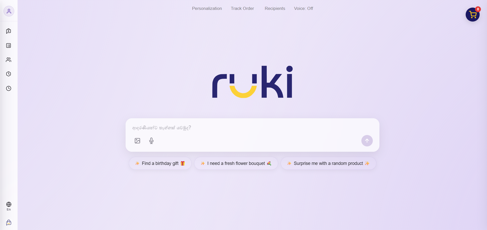
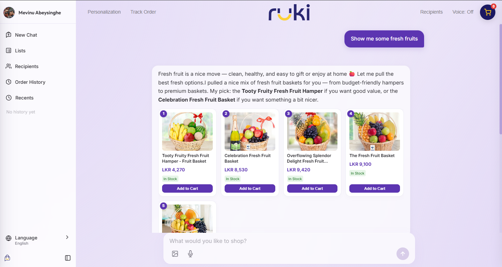

Ruki AI is a conversational commerce platform designed specifically for Kapruka, Sri Lanka's leading online gift and delivery platform. Built with a Python/FastAPI backend and powered by OpenAI's Responses API, Ruki transforms the traditional e-commerce experience into a seamless, natural language-driven journey.
Conversational
Commerce
Natural Language Search
Users describe what they need — "birthday cake for my mom, chocolate, under Rs. 5000" — and Ruki's intent engine surfaces the most relevant products instantly.
Contextual Memory
Ruki tracks conversational context across turns. "Show me cheaper ones" is resolved against the last search result without re-querying.
Intelligent Routing
A fast intent model classifies intent in milliseconds. The full conversation model receives a pre-classified hint, saving tokens and reducing latency dramatically.
Smart Product Discovery
The Recommendation Engine analyzes user intent and re-ranks products contextually. In-stock items, visually rich products, and price-matched results are promoted automatically.
Ruki handles pagination, deduplication, and sorting entirely behind the scenes, presenting clean, manageable product carousels to the user.

Built for Real
People
Persistent Memory
Ruki stores user preferences, dietary restrictions, past interests, and saved addresses. "I'm allergic to nuts" is remembered and applied as a product filter from that moment forward.
Guest Shadow Profiles
Guests browse and build carts without signing up. A shadow profile tracks their session. When they register, everything — cart, wishlist, chat history — merges seamlessly.
Custom Lists & Wishlists
Users create named product collections mid-conversation: "Add this to my Anniversary list." Lists persist across sessions and can be recalled by name at any time.
Multi-Language Support
The language layer handles dynamic switching between English, Sinhala, and Tamil — even mid-conversation. The intent router classifies language on every turn.
Order Tracking
Post-purchase, users simply ask "Where is my order?" Ruki queries Kapruka's backend and returns live tracking status directly inside the chat.
Natural Cart Control
"Add two of those", "Remove the flower bouquet", "Change the cake to vanilla" — cart operations via full natural language with no UI clicks required.
Cart & Checkout Flow
Users can add, remove, or modify quantities of items in their cart via natural language.
The Checkout Engine governs a robust state machine that safely guides users through the checkout process, validating cities and delivery zones to prevent logistical errors before payment.

Three-Tier
Architecture
Tier 1 — API Gateway
FastAPI handles all HTTP and SSE streaming routes. Auth middleware manages session, guest, and monitor access securely.
Tier 2 — AI Layer
An Intent Router pre-classifies each message. The Conversation Model streams text and intelligently invokes backend tools.
Tier 3 — Engine Layer
Six Python Engines (Product, Recommendation, Checkout, Delivery, Memory, Lists) execute all business logic behind the scenes.